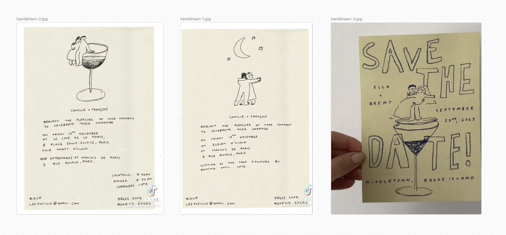

markdown showcase (macro)
This page shows what longer macro posts can do: headings, sidenotes, tables, code, color swatches, and more.
first section
Regular paragraphs support italic, bold, and links.
A sidenote sits in the margin on wide screens1 On narrow screens, hover or tap the number to read the note. Sidenotes use ^[like this] in markdown..
Blockquotes work for pull quotes or asides. They stay readable against the main column.
nested lists
- Top level
- Nested item
- Another nested item
-
Back to top level
-
Ordered lists
- Work too
- For steps or rankings
a small table
| Feature | Syntax |
|---|---|
| Images | <img src="../../img/photo.jpg" alt="photo" loading="lazy"> |
| Cover | cover: in front matter |
| Sidenotes | 2 note text |
second section
Inline code and fenced blocks:
---
title: my post
date: 2026-06-01
cover: img/thumbnail.jpg
---
Footnotes also work in the classic style.1

third section
Use multiple # headings in the body to build the table of contents in the left gutter on wide screens.
-
This is a footnote at the bottom of the post. ↩